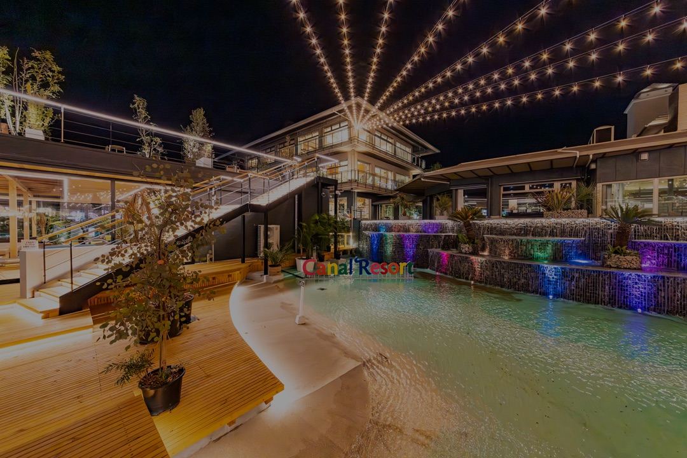
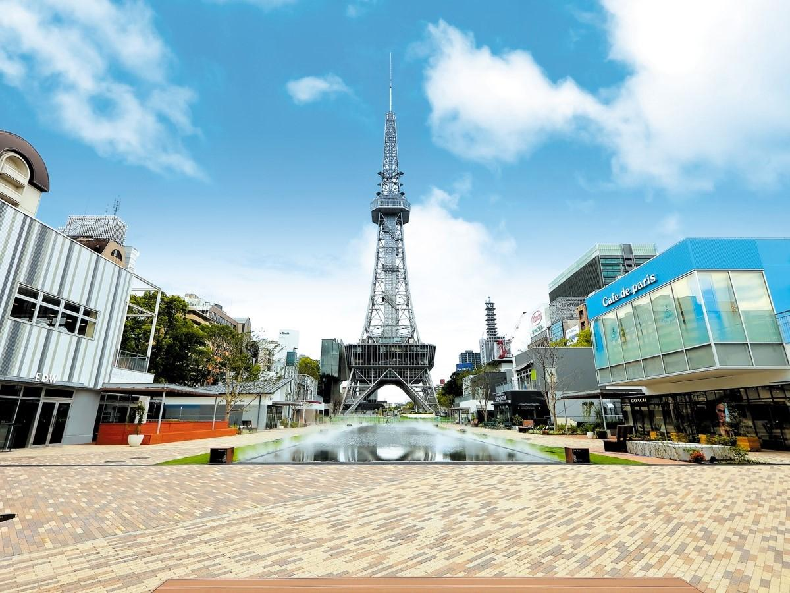
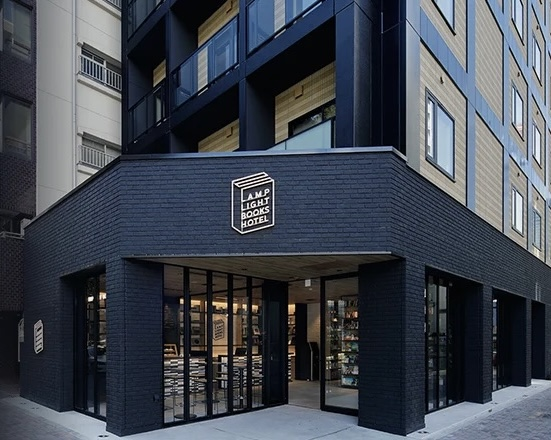
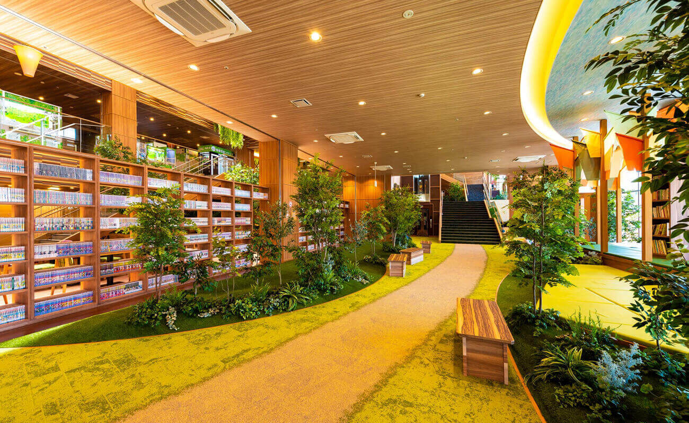

インドア派カップル必見！
名古屋ゴロゴロデート5選
休日はお出かけよりのんびりしたい？
TikTok動画で反響だった
名古屋周辺のゴロゴロできるデートスポットを
ランキング形式でご紹介！
次のデート選びの参考にぜひ活用してみてね！
※本ページはプロモーションが含まれています

出典：キャナルリゾート公式サイト
1. キャナルリゾート（名古屋市中川区）
絶対に外さない最強のゴロゴロスポット！広大な岩盤浴ラウンジエリアには、カップルでくつろげるテントやハンモック、半個室の「おこもりスペース」が完備されています。数万冊のコミックを読みながら、時間を忘れて2人で無限にダラダラできちゃう天国のような空間です。
スポット詳細をチェックする
出典：名古屋コンシェルジュ公式サイト
2. 久屋大通公園（名古屋市中区）
南北1キロにわたる綺麗に整備された公園で、テレビ塔を見上げるロケーションが最高！芝生広場では定期的にテントやハンモックの貸し出しイベントなども行われており、テイクアウトしたカフェドリンクを片手にピクニック気分でゴロゴロくつろぐのにぴったりの場所です。
スポット詳細をチェックする
出典：ランプライトブックスホテル公式サイト
3. ランプライトブックスホテル名古屋
「本の世界を旅するホテル」がコンセプトの非日常空間。1階には24時間営業のブックカフェがあり、ミステリーや旅に関する本などこだわりのラインナップが揃っています。好きな本を選んでお部屋に持ち込み、ふかふかのベッドでゴロゴロしながら読書デートが楽しめます。
スポット詳細をチェックする出典：名古屋コンシェルジュ公式サイト
4. 愛・地球博記念公園 モリコロパーク
ジブリパークがあることでも有名な、愛知県最大級の広大な公園。大芝生広場は驚くほど広く、レジャーシートを広げてカップルでゆったりくつろげます。お弁当を持って行って、自然の風を感じながら青空の下でお昼寝するのが最高のリフレッシュになります。
スポット詳細をチェックする
出典：RAKU SPA GARDEN 名古屋公式サイト
5. RAKU SPA GARDEN 名古屋
入館すればおしゃれな館内着で1日中過ごせるスパ施設。広い休憩エリアにはソファベッドや半個室の2段ボックスなど、とにかくゴロゴロできる場所が豊富に用意されています。お風呂に入ってすっぴん＆リラックス状態でくつろぐ、おこもりデートの大定番です。
スポット詳細をチェックする